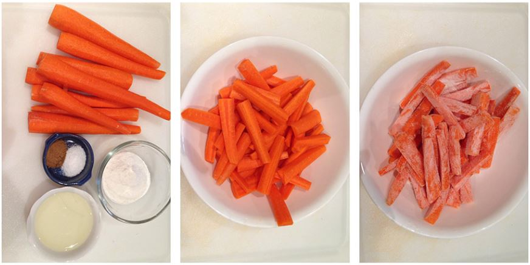
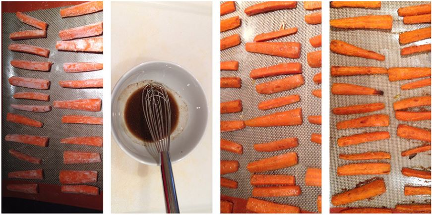

Week #1
Carrot Fries
Created by Paul Walters
January 12, 2018
Fries made from Carrots in only 20 minutes?
Ingredients
- 2 pounds large carrots, trimmed and peeled
- 6 Tbsp. white rice flour
- 6 Tbsp. canola oil
- 2 tsp. garam masala (an Indian spice blend that can include cinnamon, pepper, cumin and cloves)
- 2 tsp. kosher salt
Instructions
- Preheat oven to 4500 and place the oven racks on the 2nd and 3rd positions. Cut carrots into French-fry-size sticks,
about 3" long. In a large bowl, toss carrots with rice flour to coat and shake off excess flour.

- Spread the carrots without crowding, in a single layer on two rimmed baking sheet lined with parchment paper. Bake 7 minutes.
Meanwhile, combine oil, garam masala, and salt in a large bowl. Gently remove carrots from the baking sheets and toss with oil mixture.
Return carrots to baking sheet and bake approx. 10-15 minutes or until crisp-tender and lightly browned along the edges.

More Recipes